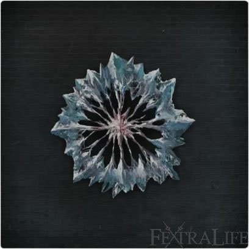

Bloodlicker |
|
 |
|
| Enemy Type | Not Beast Nor Kin |
| Health | 405 or 1362 |
| Drops | Bloodtinge Gemstone, 211 or 2310 Blood Echoes |
| Weak | Righteous, Bolt, Thrust, Physical (slash) |
| Strong | Blunt and Arcane |
| Locations | Forsaken Cainhurst Castle, Chalice Dungeon, The Hunter's Nightmare |
Bloodlickers are enemies in Bloodborne.
Bloodsucking Beast Information
Prowling the grounds of Cainhurst castle with their unmistakable, vile bodies, these fast-moving creatures can prove quite dangerous. Their appearance is somewhat flea-like, and they are equally as swift in their movements and attacks.
These enemies are not to be trifled with, as their jumps and sudden turns can quickly finish off even a high level, high vitality player. They can dodge expertly and will do their utmost to keep the player within sight. Bloodlickers can come in slightly different variations; the size of their blood-sack will indicate their resistance to physical attacks.
Not all Bloodlickers will actively seek to engage enemies, as some will simply stand still in the snowy ground of the forsaken castle, admiring the landscape. However, they will still be very aggressive once engaged.
Strategy
- Get close to the back of this enemy and perform a heavy attack, beware of Mule Kick attack (see below). However, know that it is not subject to visceral attacks.
- They are extremely fast, and their jump attacks are double, meaning they will jump once and then again to land on you.
- Also note that Bloodlickers will hiss immediately before using their frontal attacks, so be prepared to quickstep behind them as soon as you hear this cue.
- Bloodlickers in chalice dungeons have a small aggro range tied to their spawn location which can be abused for hit and run tactics.
Moveset
| Attack Name | Attack Description |
| Claw Slaps | It will swipe at the player with fast, erratic attacks. These could be single attacks or combos. |
| Jump Attack | The bloodlicker will jump at the player, covering a large distance with this high-damage attack. |
| Claw Stomps | Tries to hit the player with floor slaps. |
| Mule Kick | An attack which only takes place if the player is behind it. Will kick both its hind legs. |
| Spit Blood | It spits blood as a ranged attack that can inflict Slow Poison. Exclusive moveset for the bloodlickers in the Hunter's Nightmare. |
| Tantrum | Will shake its head and tongue frenetically, hitting the player multiple times if connecting. |
-  Pvt_Booger -
Pvt_Booger -
-  Mhazard -
Mhazard -
Bloodlicker Information
This enemy comes in three different "bloodsack" sizes, indicating physical resistances. Its preset Chalice Dungeons locations are: Pthumerian Labyrinth, Central Pthumerian Labyrinth, Hintertomb, Lower Hintertomb, Lower Pthumerian Labyrinth, Cursed Pthumerian Defilement, Ailing Loran, Lower Loran, Isz Gravestone, Pthumeru Ihyll. Bloodlickers will appear in chalice dungeons only after the player uses visceral attacks against large enemies and moves to a different room, and even then only less than half the time.
Bloodlicker
| Location |

|

|
 |
| Forsaken Cainhurst castle | 1362 | 2310 | (1x) 16% |
| Chalice Dungeons | 405 | 211 | (1x) 16% |
| Hunter's Nightmare |
Lore
- Bloodsuckers are most likely transformed Vileblood knights and nobles. They share their weakness pattern (Righteous, Bolt with a resistance to Arcane) as well as their silver hair and vampire theme.
- Hiding behind their long hair is a weary, wrinkled face. This could be because of starvation, vampirism or their relative age as "insects".
Notes & Trivia
- There is a chance it will appear in chalice dungeons when a visceral attack is performed on an enemy. If the player leaves the room and returns, a bloodsucking beast could be lapping up the blood.
- The Watcher's Gravedigger and Merciless Watcher (Mob) have a high chance of spawning Bloodlickers if a visceral attack is performed on them.
- It is possible when dying on a boss that you used multiple visceral attacks on (Merciless Watchers in the Lower Pthumeru Chalice) It's possible for your blood echoes to become tied to a Bloodlicker even though they technically weren't spawned in the room. This means that it's possible to make your blood echoes impossible to retrieve if you don't perform a visceral attack during your second attempt. It also means that you will have to leave, and then return to the boss room without reloading in order to make sure it spawns.
- Farming these enemies in advanced Chalice Dungeons is the only way to gain high level Bloodtinge Gemstones (Circle). You can farm them for the Circle Blood Gems they drop .
- They don't just spit blood from their mouth, they shoot it from their nose as well.
- Bloodlickers are also found in the Hunter's Nightmare drinking from the river of blood, though why is still unknown.
- Bloodlickers exclusively drop bloodtinge gems, this could prove very important in establishing their alien allegiance.
- Though mostly covered in spiky hairs, their tail seems to have small, pale feathers.
- Aside from the Vermin snakes only the Loran Cleric has a similar thin tongue.
- In version 1.00 of Bloodborne, their corpses will often fail to disappear upon death.
Gallery

 Anonymous
Anonymous
- Anonymous
One of these actually came into the castle for the first time, I couldnt believe it! I thought the front door was closed just enough to keep them out.
- Anonymous
- Anonymous
is the person who wrote this really unaware of why the BLOODlickers are found in a river of blood?
- Anonymous
Appearently the final stadium of a vileblood. The blood keeps you strong and young. But eventually turns you into an ever hungry living husk. Except for the queen.
- Anonymous
- Anonymous
Saif is bloody useless against these ****ers. Makes me wish I had my axe instead.
- Anonymous
You don't have to do a Visceral Attack for them to spawn in CD's. You just need to initiate a VA animation. They will spawn regardless of whether or not you actually take the Visceral.
- Anonymous
- Anonymous
- Anonymous
I want to tear these things' tongues out and strangle them with them
- Anonymous
I know it's not much comfort when first you arrive, but for you arcane builds out there: the Executioner's Gloves work wonder on these annoyances. Go into the castle, loot them, and stock up on Quicksilver because it's time for some very satisfying revenge!
- Anonymous
- Anonymous
- Anonymous
They're pretty spooky and grotesque but that "emo girl at hot topic" ass hairstyle always sends me
- Anonymous
- Anonymous
I sincerely wish the absolute worst on anyone who thought adding these awful enemies would be a good or fun idea.
- Anonymous
The bloodcurse transformed them into undead monster fleas. they still suck blood out of hunger but it does nothing for them anymore. Their bodies cannot make use out of it. The blood won't leave the belly and the bodies turn pale and ugly increasing the hunger even more. Driving them insane. Probably the worst nightmare for these once noble superhumans.
- Anonymous
- Anonymous
These *****ers and winter lanterns are truly some of the worst enemies in the entirety of the soulsborne series.
- Anonymous
Much bigger and creepier than I expected on my first encounter. Nearly shit myself getting comfortable running through a room I'd already cleared.
I love this game.
- Anonymous
"Bloodlickers are also found in the Hunter's Nightmare drinking from a river of blood, though why is still unknown."
Wasn't Cainhurst allied with the Hunters and the Healing Church during the time of the Old Hunters? I doubt the Healing Church would have brought Lady Maria to the Research Hall if she was a transformed Vileblood, nor do I think she would have assented knowing that the Healing Church had unleashed the Executioners on her family. Couldn't the Bloodlickers in the Hunter's Nightmare be Cainhurst knights that had come to assist the Old Hunters, but became trapped in the Nightmare after succumbing to blood thirst? (Notice that unlike with the beasts in the first half of the level, the Old Hunters do not attempt to fight the Bloodlickers and move freely among them as allies...)
It still perplexes me that these enemies, as well as the gargoyles, are not considered beasts.
- Anonymous
oh wow, this doesn't seem to be common knowledge yet, so let me share with you what i discovered (almost 3 years ago). there is a spot from where you can attack them that they can't react to. dodge any initial attack and go behind the enemy, NOT directly behind, because that will cause them to retaliate with their mule kick, but slightly to the side (when you lock on you'd face either behind leg). lock on and slash away, you can combo up all your stamina, because the enemy will not move, counter or dodge in any way. he will move again after you end the combo (if he isn't dead yet), so you'll have to reposition. i honestly thought a lot of people should have found this out by accident by now, as i did. You still have to face them one-on-one though.
The scorpions in the dungeons have a similar "freeze" position depending on where the player is standing while engaged in combat.
i came here to finally check what was up with the dungeon appearances. i noticed they always appeared where a mini-boss was standing (Watcher, Madman, etc.). i always thought it simply had a chance of appearing after i used the boss-lever, but i never thought it'd have to do with visceral attacks, which in fact is the way i kill most Watchers, Madmen and the like. it makes perfect sense now (the enemy being attracted by massive bloodloss).
- Anonymous
The R2 attack of the non-transformed Holy Moonlight Sword staggers them extremely well, allowing you to combo them to death relatively quickly. Just be sure to fight them one at a time and you can clear the area with ease.
- Anonymous
I havent seen the method I use to kill these bloodlickers so here's what I do:
Kite them to the main chapel/church door.
Use threaded cane, or whatever that may hit them through the open door
Rinse and repeat.
"Bloodsuckers are most likely transformed Vileblood knights and nobles. They share their weakness pattern (Righteous, Bolt with a resistance to Arcane) as well as their silver hair and vampire theme."
This note doesn't seem to be entirely true, given that the Knight's set (being the attire donned by the knights of Cainhurst, as opposed to the Queen's royal guards, which wear the Cainhurst set) bears a above-average resistance to Bolt, and has a slightly below-average resistance to Arcane (as opposed to the alleged 'weakness to Bolt with a resistance to Arcane") and the Righteous attribute is not implied nor listed in regards to the Knight's set nor the Knights of Cainhurst. As well as the fact that the Knight's set gives very decent physical defense and has decent Blunt dmg-reduc as well as its thrust dmg-reduc is the highest stat for the set in terms of physical defense (compared to the Bloodlickers, which have a weakness to thrust). Another fact to be noted, is that Bloodlickers not only appear at Cainhurst, but also in the Hunter's Nightmare and in certain Chalice dungeons. If they were knights of Cainhurst, it would be more viable if they appeared solely in Cainhurst, given that all methods of arriving to the Castle is cut off.
- Anonymous
The only monster i might hate more than these things is the Winter Lanterns. I'm really NOT looking forward to fighting through a hoard of them in hunter's nightmare. Can anyone tell me if the ones in the blood river have more or less health than the ones at Cainhurst? it's not listed in the article above at the time of posting. The ones at Cainhurst still give me trouble even 1-on-1, I need to know how far in over my head I'll be going for the Amygdala Arm and Gattling Gun. Also are they vulnerable to the Shaman Bone Blade?
- Anonymous
- Anonymous
There is one of those beast which is a lot fatter than any other. Whats curious though is that it doesn't attack you and flees instead. Thought it was weird.
- Anonymous
Dodging to the side when they leap and attacking (into their side) with a heavy wep like a kirkhammer or greatsword seems to get them in a semi stun lock, just the basic attacks stagger them a little. This is the best method I've found to deal with them. If you stand behind them they try to kick, so be careful of that.
- Anonymous
easiest way I found was to cheese em' by locking on, then quick stepping to the side and behind, paired with R1 once, repeat. They killed me like 14 times in a row at cainhurst till I tried that, the only drawback is you have to kite em'
- Anonymous
It worked for me hitting it from the sides, with a non-stop combo using the twin blades.
- Anonymous
If you kill an enemy with a visceral attack in a chalice dungeon, you might summon one of these beasts. so when you leave the area and come back later, they might be there sucking up the blood from the floor. anyone wanna add that? sry i can't edit properly
- Anonymous
Compared to many of the other denizens of Cainhurst, these guys are gigantic punks. They're fast and they hurt. Worst, they are fans of big single-hits with a long reach. Back-dodging is good for avoiding, but their recovery time is quick enough that you can't get a hit in and, once again, they have more reach than most weapons. I advise circling them, as they don't turn particularly well. Attack from the sides; they have a dual-back kick attack that will hit you from their immediate rear.
These guys have the odd tendency to also wander off the edge of the cliff outside the Castle. I can't count how many times I've randomly gotten souls there a few minutes after spawning at the lamp
- Anonymous
Why does everyone seem to have trouble dealing with those? Yes they cannot be staggered and yes they are fast but their attacks are so easy to evade I can understand if you got problems using a heavy weapon but otherwise those are a joke even with their speed.
- Anonymous
They really are. Borderline impossible to kill as they cannot be stunned, are extremely hard to stagger, and don't react to visceral attacks. >.> Their attacks are constant and frantic, and once engaged you'll be unable to retreat as it'll just frog-leap after you. Super lame enemy that goes against the whole point of the enemies of the Soulsborne franchise thus far, as pretty much all other enemies either have a weakspot, are strong and slow or quick but can be countered with parries and what not. I've died more to Bloodlickers than all bosses combined, and I'm not even exaggerating.
- Anonymous
it reminds of that boss from evil within anyone know what im talking about
- Anonymous
Awful, even without their speed and damage. The way their bellies are bloated and red with useless blood while the rest of their bodies are lifelessly pale. They take no sustenance from it, just mindless gluttony. Gives me the horribles.
- Anonymous
When I fought these guys, I just used the R2 thrust on ludwig's or chikage and they would get staggered. Just continuously thrust attack them but you might get hit at least once but ignore it. You can also interrupt their attacks with a thrust if you're close enough to hit them without getting hit back.
- Anonymous
Just wanted to point out that there is a passive bloodlicker just outside of the entrance to Cainhurst Castle, on the left precisely, wich has a larger blood sack and does not attack no matter what
- Anonymous
I hate this creatures. I dont like to fight them. Even from behind they can kick you and kill you fast from forward. Ive encountered them in Chalice dungeons quite often. I was once running back to the previously cleared area, in dark and I had a firestick in my hand, I was running and I encountered one of these. It jumped right at me ... I *****ted my pants screaming OMFG, I was totally unprepared.
- Anonymous
I've noticed on various occasions during my runs through the Chalice dungeons. You don't exactly have to kill someone with a visceral attack; you just have to use one for them to appear on six different occasions for me I didn't finish the a Madman with a visceral but I did hit him with it. I killed him with 1-2 more normal swings and then came back later and this annoying creature was there. So from my personal playing; someone else should test it though I guess. You just have to preform a visceral.
- Anonymous
- Anonymous
This punk appeared during a chalice bossfight. I viscerales two of the watchers and then almost got rekt by a bloodsucker. He must have apeared as I was circling the watchers through the room. A very dangerous evemt for sure!
- Anonymous
Threaded cane works well in whip mode. They swipe at you you can dodge back or just be far enough back when they strike for you to counter attack and then backup or dodge back rinse repeat. Also the fountain in the courtyard is good to use to get them because the get slowed running into the fountain. Again is threaded cane in whip form. By far the easiest method I have found so far after you get past the first two and the courtyard there's two sets statues that are just wide enough for you to get through but they can't if you can bait them to chase you between the statues they will get themselves semi stuck as long as you keep your distance with the threaded cane they are easy kills. Also dodge sideways when they jump attack if you're not using the fountain or the statues. Hope this helps.
- Anonymous
Now that the guide is out, we know that the official name for this enemy is "Bloodlicker." Someone with more privileges should change the page name.
- Anonymous
The forward jump attack with a heavy weapon (greatsword Ludwig's for example) is IMO the best way to kill them. Otherwise they are tough and cannot be staggered easily.
- Anonymous
Just found about 7 of them in the room in depth 2 pthumeru chalice. I am SURE I visited that room for the first time, if this kind of rooms exists in higher depth chalices it is a quick way to farm good bloodtinge gems.
- Anonymous
Extremely aggressive, fast as ***** with devastating attacks. It was almost impossible to me to survive, when I faced more than one on them at the same time. The easiest part to me was evading their attacks. The hardest part to me was landing a hit without disregarding my defense... Best strategy for me was the jump attack with a buffed Tonitrus and dodging dodging dodging.
- Anonymous
Looking at the comments, I see a lot of methods being used to deal with these Bloodlickers, and I've tried most, if not all, of these methods for comparison's sake; however, none have been as consistently reliable and convenient as the method I first found: a single L2 attack from Ludwig's Holy Blade (greatsword), which will stagger them even from the front (so probably any angle). Bait their jump attack and move in as close as possible during the ending lag (this is key if you want to land a third hit). What happens next leaves no room for hesitation, so inputting the command early is for the best. The Bloodlicker will attempt to swipe at you, and your L2 attack will not hit until 1-2 frames before their attack lands. In other words, unless you're like me and notice the flickering from those ***** fluorescent bulbs, you're probably not going to see it clearly. As I hinted at earlier, you can chain these hits together, as they will always attempt a swipe immediately after; however, if you did not start close enough to them you will miss your follow-up attacks. Luckily, if your swing misses, generally theirs will as well. Stop at the third attack. I don't care if you staggered them. I don't care if you're a stamina god. I don't even care if they have 2 HP left. Your fourth L2 attack is a thrust that will always end up just below their faces. If anyone knows an attack in LHB's moveset that can reliably connect (and hopefully stagger) after three L2 attacks, I'd love to hear about it. But that attack is definitely not an L2 (too short), or R2 (takes to long), R1 (lol nope).
- Anonymous
IRL, when a tick bites into your skin, a known trick to get them to stop biting you is to poke them with a stick/rod that is heated on the end, like an incense stick for instance. Coincidently, these creatures that resemble a tick/flea are vulnerable to thrust attacks and fire.
- Anonymous
"Righteous" isn't as damage type. Neither is "serrated" (as listed in the Pig's weaknesses).
- Anonymous
Even though Bloodlickers were primarily seen in the Cainhurst Castle front yard (before the DLC) it doesn't mean they are transformed residents of the castle, albeit it is a plausible explanation to their presence. However, the fact that they appear in other areas such as Chalice Dungeons and the blood river in the Hunters Nightmare would suggest that all the areas that they inhabit have a common characteristic to it. If you think about it the only thing in common is the presence of great amounts of blood. That being, the executioner massacre in Cainhurst Castle, the blood river being... well... full of blood and making a visceral attack (which we know it's quite bloody) in Chalice Dungeons. The possibility to make one spawn after a visceral attack in Chalice Dungeons is what says the most about this beast. Therefore, the only logical conclusion is that Bloodlickers just appear wherever they can have large quantities of blood at their disposal (because that's their food of course) and MAY have nothing to do with the former people from Cainhurst Castle turning into them at all.


{kind=link}
{kind=link}
{kind=link}
{kind=link}
{kind=link}
The ones in Hunter's Nightmare are rightfully nerfed. This is the Skeleton Beast of Bloodborne. What a ****ing joke.
0
+10
-1